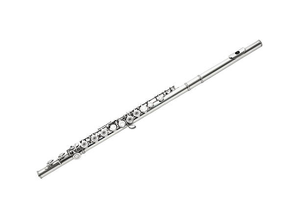

Music
Band
I started band when I was in fifth grade. I picked the flute because I thought it would be easier to play. I was totally wrong; it turned out to be one of the hardest instruments to play because it needed a lot of air and had many keys for your fingers to press down. I even considered switching instruments, but I decided not to because I wanted a challenge to push through. Once I reached middle school, there was an option to join jazz band. I decided to give it a try, and my band director informed me that the flute would not sound good in a jazz band. So, I chose to play the saxophone instead. I played in jazz band for a year, but I eventually quit because it was challenging to try to master two instruments at the same time. After leaving the jazz band, I thought about quitting regular band too, but my band director convinced me otherwise. Looking back on it today, I am truly grateful to him for that. Finally, I made the decision to continue with band into my freshman year, and I am very pleased with that choice because all of my friends also decided to continue.
